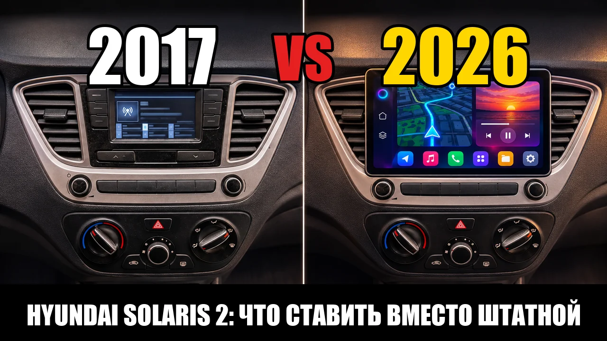
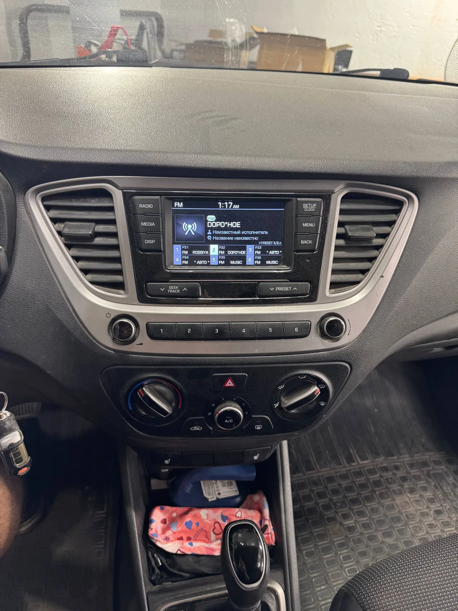
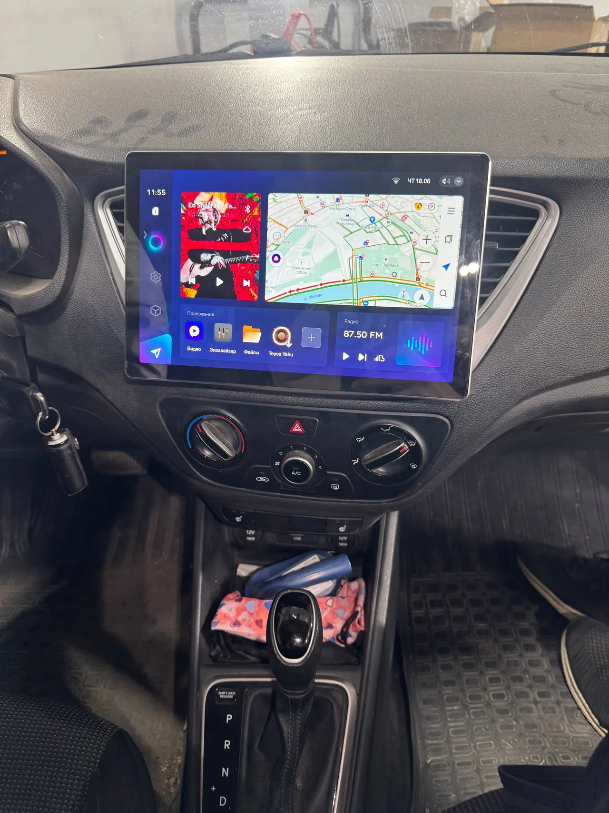
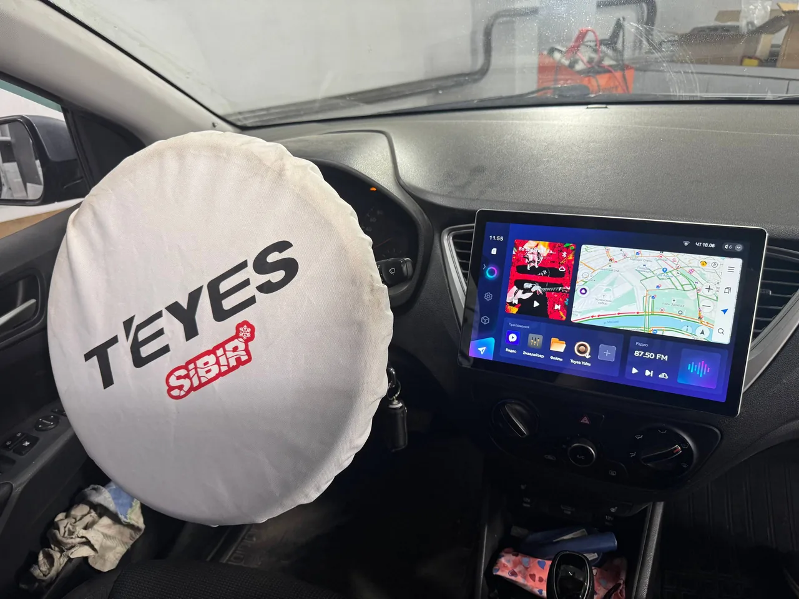

Лучшая магнитола для Хендай Солярис 2: что ставить вместо штатной в 2026 году

Hyundai Solaris второго поколения ездит без капризов, а штатная магнитола в нём – радио, флешка и шесть кнопок памяти.
Навигатор – в телефоне на присоске, телефон – на проводе через весь салон. Пробки смотрите на светофоре, наклонившись к стеклу.


Коротко: что ставить на Solaris 2
Лучшее решение для мультимедиа второго Solaris – Android-магнитола Teyes в штатную рамку. Экран встаёт на место старой магнитолы между дефлекторами, климат остаётся на своих ручках, кнопки на руле подключаются к новой магнитоле.
В каталоге TEYES Sibir под Solaris 2 2017–2020 годов Teyes CC3L стоит 28 800 ₽ – цена на сайте 18.11.2026, при оплате наличными, установка отдельно, от 4 500 ₽. Мы ставили на Solaris и Teyes CC3 2K с экраном 11 дюймов – она на фото выше.
Какой у вас Solaris: до 2020 года или после
Второй Solaris начали собирать в Санкт-Петербурге в феврале 2017 года, в салоны он пришёл в конце февраля. В феврале 2020 года там же запустили обновлённую версию. Завод выпускал Solaris до 2022 года.
- Моторы: 1.4 на 100 л. с. и 1.6 на 123 л. с., механика или автомат, обе коробки шестиступенчатые.
- Комплектации: Active, Active Plus, Comfort, Elegance.
Solaris – имя для России. В других странах этот седан продавали как Hyundai Accent. Первый Solaris 2010–2016 годов – другая панель, под него в каталоге отдельные комплекты.
Что стояло в машине с завода
2017–2020 годы.
- Active – только подготовка под аудиосистему.
- Active Plus – аудиосистема с USB, AUX и кнопками на руле.
- Comfort – плюс Bluetooth и громкая связь.
- Elegance – мультимедиа с сенсорным экраном 7 дюймов, Apple CarPlay и Android Auto, навигация с пробками.
Камера заднего вида с разметкой, которая поворачивает за рулём, шла за доплату.
После обновления 2020 года. В комплектации Comfort появилась мультимедиа с сенсорным экраном 8 дюймов, CarPlay, Android Auto и «Яндекс.Авто» с навигатором и Алисой.
На нашей машине стояла магнитола с небольшим цветным дисплеем, кнопками RADIO, MEDIA, DISP и шестью кнопками памяти станций.
Что раздражает владельцев в 2026 году
Нет навигатора. У младших комплектаций карт в машине нет. Телефон висит на присоске и закрывает кусок дороги.
Мелкий экран. На дисплее штатной магнитолы помещаются станция и список из шести кнопок. Карту на нём не открыть.
Парковка задом. Камера была опцией. Если у вашей машины её нет, задний бампер вы видите только в зеркалах.
Провода. Зарядка, AUX, держатель – всё живёт на тоннеле между сиденьями.
Три пути и какой выбрать
Ездить с телефоном. Бесплатно, присоска и провод остаются.
Купить держатель получше и камеру отдельно. Камере нужен экран, и им снова становится телефон или отдельный монитор.
Поставить Android-магнитолу Teyes в штатную рамку. Большой экран вместо старой магнитолы, Яндекс Навигатор, интернет по SIM-карте, CarPlay и Android Auto, камера заднего вида на том же экране. Этот путь закрывает все пункты из списка выше.
Какую Teyes ставить на Solaris 2
Цены каталога TEYES Sibir на 18.11.2026, со скидкой за наличный расчёт:
- Teyes CC3L – 28 800 ₽ для машин 2017–2020 годов и 30 100 ₽ для 2020–2021: память 4/32 ГБ, экран IPS 1280×720, 8 ядер, SIM-карта с 4G, Wi-Fi, процессор звука DSP, CarPlay и Android Auto, вход камеры AHD 1080p.
- Teyes CC4 12.3" – от 53 350 ₽: горизонтальный экран QLED 1920×720, 6/64 ГБ. Версия с круговым обзором 360 – от 63 530 ₽.
- Teyes CC4 Pro – от 61 360 ₽: 8/128 ГБ.
Комплект CC4 12.3" под Solaris 2 бывает двух типов: тип A – для машины без штатной камеры, тип B – для машины со штатной камерой. Есть ли у вас камера и какой год, видно по фото панели.
При покупке мультимедиа Teyes камера заднего вида в подарок или скидка 1 000 ₽ на широкоугольную камеру, промокод САЙТ.
Что останется от штатного
- Климат. Ручки температуры, обдува и кнопка A/C под экраном работают как раньше, на нашей работе – на фото выше.
- Аварийка. Кнопка остаётся на своём месте над климатом.
- Кнопки на руле. Если они есть у вашей машины, подключаются к новой магнитоле.
- Штатная камера. Если у вашей машины она есть, под неё в каталоге отдельный тип комплекта CC4 12.3".
- Отделка салона. Экран встаёт в штатное место между дефлекторами, панель не пилят.

Наша работа по Solaris
Hyundai Solaris, Teyes CC3 2K с экраном 11 дюймов, июнь 2026. До установки в машине стояла штатная магнитола с небольшим дисплеем и кнопками RADIO, MEDIA, DISP. После – экран 11 дюймов между дефлекторами: на главном экране карта с пробками, музыка и радио. Блок климата и аварийка под экраном остались прежними.
Все варианты для Solaris – замена магнитолы, камеры, что проверить до заказа – собраны на одной странице: магнитола и мультимедиа Hyundai Solaris. Комплект CC3L под Solaris 2 2017–2020 с ценой – в каталоге, CC4 с экраном 12,3 дюйма – тоже в каталоге.
TEYES Sibir, официальный установочный центр Teyes в Новосибирске: Сухарная 35 корпус 13, пн–пт с 11:00 до 19:00.